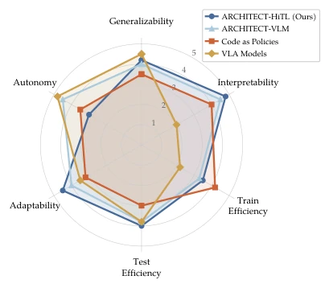
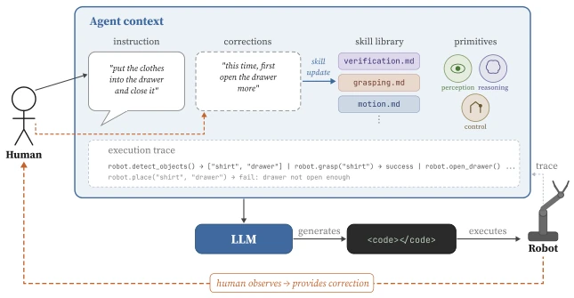
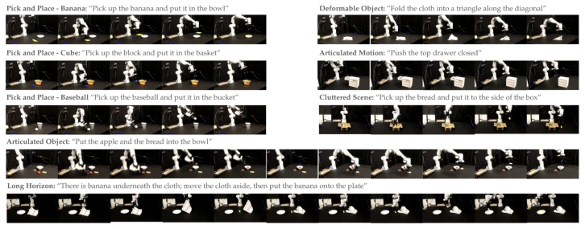
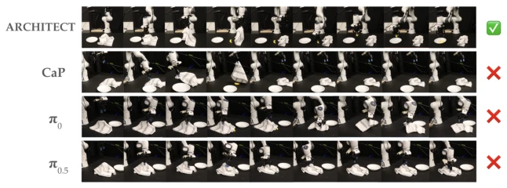
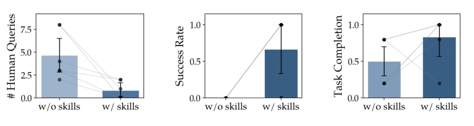
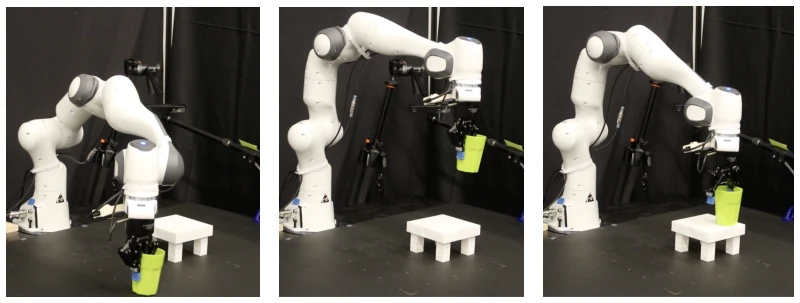
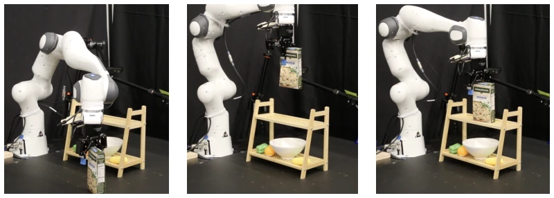

This paper performs a 'craniotomy' on black-box VLA policies. The ARCHITECT framework transforms robot policy synthesis into interactive programming, using LLMs to write code to call tools, rather than outputting actions directly. The highlight is that 'human-language error correction' can become a persistent skill library, eliminating the need for retraining next time, achieving long-term context learning. However, a critique is that this method relies too heavily on underlying tools (like grippers); if the underlying grasping itself is poor, no matter how fancy the upper-level code is written, it is futile. Moreover, humans still need to watch over it; although cheaper than VLA hyperparameter tuning, can it truly completely replace expert demonstrations? The title says 'a few words work', indeed, but if the words are not written correctly, the LLM might still hallucinate. Additionally, the accumulation of the skill library requires enough error correction samples, otherwise generalization is limited. In short, it is a highly interpretable alternative suitable for scenarios requiring fine control, but generalization depends on whether the tool library is strong enough, and it cannot completely escape human intervention.
Existing Vision-Language-Action (VLA) models, although strong in zero-shot capability, are essentially black boxes; once distribution shift occurs (e.g., new objects), they collapse, and are difficult to explain or correct [1]. Fine-tuning 7B parameter models is extremely costly; humans cannot correct behavior through 'speaking', only by collecting large amounts of demonstrations for retraining [2]. Although modular methods can decouple, initial natural language instructions often fail to capture geometric physical details, leading to the system's inability to autonomously recover [3]. Existing work mostly pursues autonomous policies, unable to improve during execution [16]. ARCHITECT aims to fill the normative gap between instructions and execution through human-machine collaborative code synthesis, allowing non-experts to 'train' robots via natural language, rather than relying on expensive data. Compared to pure end-to-end models, it provides structural priors, allowing problems to be isolated during failure, rather than full-link collapse. This solves the pain point of VLA in real deployment being 'one error, all wrong' and unable to be repaired at low cost, providing a new path for data-efficient, interpretable robot learning.

Figure 2: Comparison of ARCHITECT, Code as Policies, and Vision-Language Ac- tion Models across 6 axes of desirable traits for robot policies.
The overall process is 'Instruction - Code - Execution - Feedback - Memory'. First, the LLM acts as an orchestrator, calling toolkits (control, perception, proprioception) based on natural language instructions to generate executable code. After execution, trajectories are generated; if failed, humans provide natural language corrections (e.g., 'grab higher'). The key innovation lies in the Skill Library: corrections are distilled into persistent skills, stored in context, reusable for subsequent tasks, achieving long-term context learning. Toolkits parameterize natural language, connecting high-level reasoning with low-level geometric actions. The system self-diagnoses failure reasons via execution trajectories (e.g., 'drawer not open enough'), assisting in locating code issues. Compared to Code as Policies [3], ARCHITECT introduces closed-loop correction, not relying on initial generation perfection. Specifically, control primitives are implemented by cuRobo, perception modules utilize VQA and open-vocabulary detection. The skill library is loaded before each generation, enabling the model to 'remember' historical errors. This design transforms policy acquisition into a program synthesis task, utilizing the LLM's coding capability rather than solely as a planner, enhancing flexibility and debuggability.

Figure 1: System overview of ARCHITECT. The pipeline takes natural language input and syn- thesizes robot policies using a suite of tools including control primitives and perception modules. When execution fails or is suboptimal, a human observer provides a language correction, which both modifies the agent’s current context for re-generation and updates the skill library for use in future tasks. The agent also receives an execution trace from the robot, enabling self-diagnosis of failures (e.g., “drawer not open enough”) to help localize code improvement from corrections.
Tested 8 tasks on Franka Panda (including deformables, articulated objects). Baselines include Code as Policies [3] and VLA models π0/π0.5 [29, 30]. Metrics used are Success Rate (SR), Goal Condition Recall (GCR), and Task Progress (NTP). ARCHITECT significantly outperforms baselines on complex long-horizon tasks; VLA easily fails in complex scenes. Ablation shows human error correction outperforms VLM-generated error correction, as humans can perceive physical intuition (e.g., friction). Skill library validation shows skills from Task 1 can transfer to Task 2, reducing subsequent human query counts (from 4.67 to 0.83), proving labor costs are amortized. But it relies on underlying gripper performance; if grasping fails, correction is impossible. Experiments prove that complex tasks can be achieved with minimal human intervention, and skill accumulation can lower the threshold for subsequent tasks, validating the hypothesis that 'a few words work', but correction quality must be guaranteed.

Figure 3: The 8 evaluation tasks and their challenge categories.

Figure 4: Comparison of ARCHITECT performance against CaP, π0, π0.5 for a long horizon task (”There is banana underneath the cloth. Pick up the cloth and drop it aside, then pick and place the banana into the dish plate”). ARCHITECT completes the task, while others struggle: CaP and π0 lift the cloth but cannot move it away from the banana. π0.5 grasps the cloth but does not fully lift it.

Figure 5: ARCHITECT results from human evaluation. (a) With a populated skill library, HiTL trials require fewer human queries at no cost to success rate. (b, c) Skills from Task 1 transfer to Task 2, raising both success rate and task completion.

Figure 6: Task 1 from human evaluation. The instruction is ”place the cup upright on the table”.

Figure 7: Task 2 from human evaluation. The instruction is ”place the pasta box upright on the shelf”.